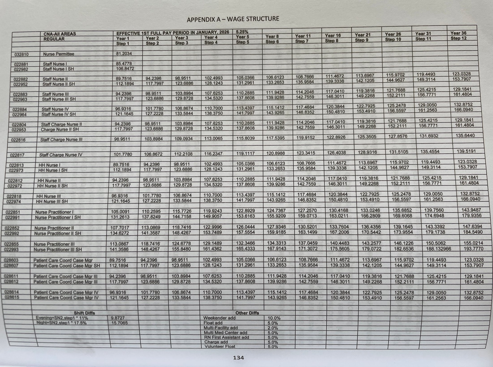
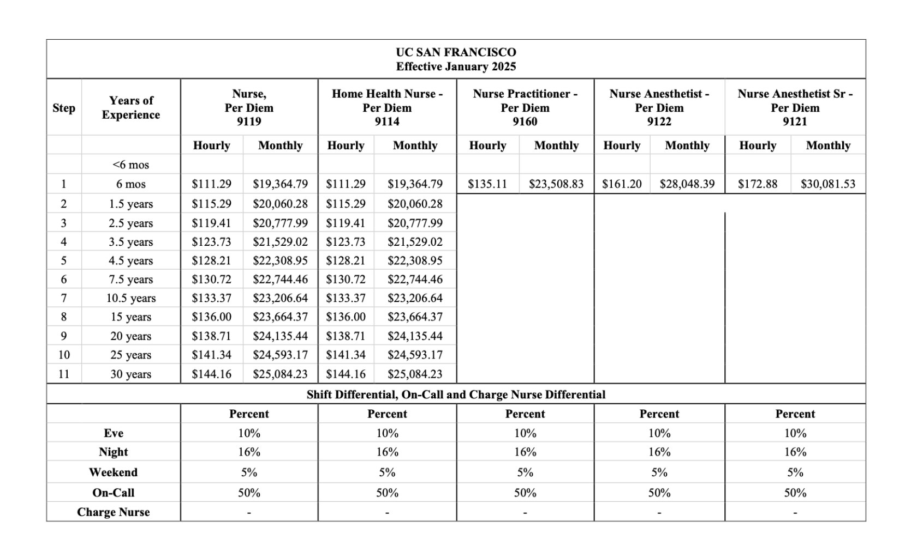
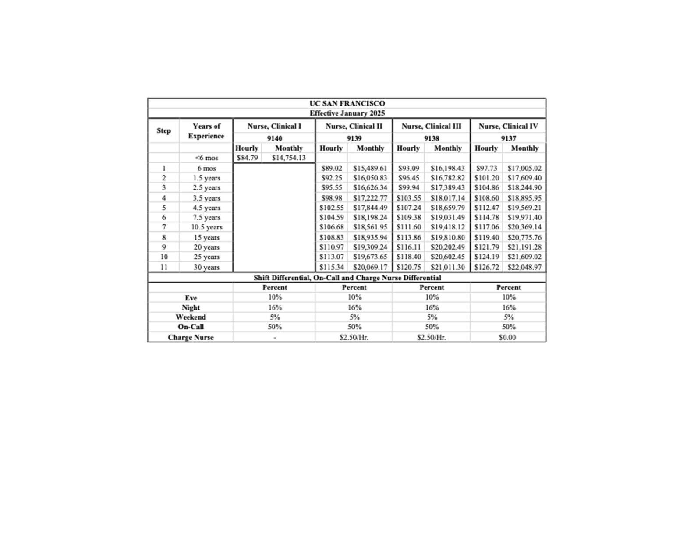
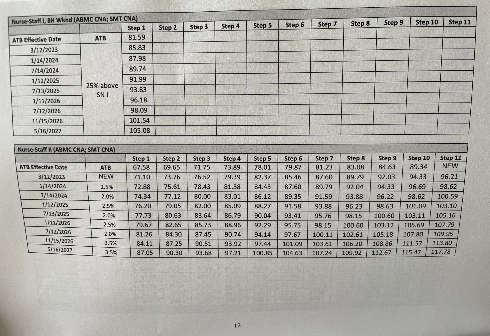
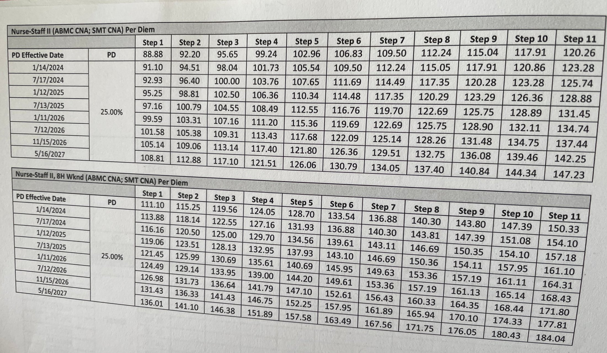
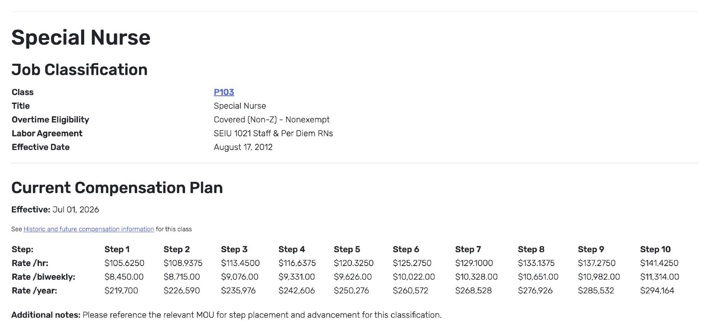
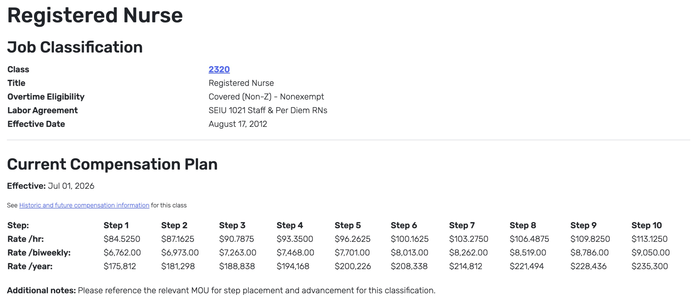

I'm a Bay Area nurse, and these are the pay tables I could get through people I know. Nurses deserve to see this stuff, so here they are, posted as I got them.
That's what my own contacts could get me. I won't guess at pay for a hospital I don't have a contract for. Got one? Send a photo. I won't share who sent it.
Kaiser CNA contract, Appendix A. Effective January 2026.
Appendix A lists these as the Short Hour (SH) rates, which are 25% above the regular Staff Nurse II rates. NursePay uses the SH rates as the Kaiser per diem rate.
| Step | Experience | Per diem (Short Hour, SH) | Regular Staff Nurse II |
|---|---|---|---|
| Step 1 | Year 1 | $112.19 | $89.75 |
| Step 2 | Year 2 | $117.80 | $94.24 |
| Step 3 | Year 3 | $123.69 | $98.95 |
| Step 4 | Year 4 | $128.12 | $102.50 |
| Step 5 | Year 5 | $131.30 | $105.04 |
| Step 6 | Year 8 | $133.27 | $106.61 |
| Step 7 | Year 11 | $135.96 | $108.77 |
| Step 8 | Year 16 | $139.33 | $111.47 |
| Step 9 | Year 21 | $142.12 | $113.70 |
| Step 10 | Year 26 | $144.96 | $115.97 |
| Step 11 | Year 31 | $149.31 | $119.45 |
| Step 12 | Year 36 | $153.79 | $123.03 |
Evening differential: $9.87 an hour. Night differential: $15.71 an hour. Both are flat dollars set in Appendix A (11% and 17.5% of the Staff Nurse II step 1 rate). The photo below shows the full Appendix A.

| Step | Experience | Hourly rate |
|---|---|---|
| Step 1 | Year 1 | $89.75 |
| Step 2 | Year 2 | $94.24 |
| Step 3 | Year 3 | $98.95 |
| Step 4 | Year 4 | $102.50 |
| Step 5 | Year 5 | $105.04 |
| Step 6 | Year 8 | $106.61 |
| Step 7 | Year 11 | $108.77 |
| Step 8 | Year 16 | $111.47 |
| Step 9 | Year 21 | $113.70 |
| Step 10 | Year 26 | $115.97 |
| Step 11 | Year 31 | $119.45 |
| Step 12 | Year 36 | $123.03 |
Evening differential: $9.87 an hour. Night differential: $15.71 an hour. Both are flat dollars set in Appendix A (11% and 17.5% of the Staff Nurse II step 1 rate).
UC NX (CNA) contract, UC San Francisco.
These are 2026 rates that NursePay calculated, not a printed table. UC and CNA have not published new wage tables yet. The current contract (term Nov 22, 2025 to Jan 2, 2030, Article 40) promises across-the-board raises on January 1 of each year: 5.0% in 2026, 5.0% in 2027, 4.5% in 2028 and 4.0% in 2029, plus a within-range step increase each July 1. We multiplied the printed January 2025 per diem table by the raises in effect.
| Step | Experience | 2026 rate (calculated, x1.05) | Printed January 2025 per diem table |
|---|---|---|---|
| Step 1 | 6 months | $116.85 | $111.29 |
| Step 2 | 1.5 years | $121.05 | $115.29 |
| Step 3 | 2.5 years | $125.38 | $119.41 |
| Step 4 | 3.5 years | $129.92 | $123.73 |
| Step 5 | 4.5 years | $134.62 | $128.21 |
| Step 6 | 7.5 years | $137.26 | $130.72 |
| Step 7 | 10.5 years | $140.04 | $133.37 |
| Step 8 | 15 years | $142.80 | $136.00 |
| Step 9 | 20 years | $145.65 | $138.71 |
| Step 10 | 25 years | $148.41 | $141.34 |
| Step 11 | 30 years | $151.37 | $144.16 |
| Other per diem roles (one flat rate) | 2026 rate (calculated, x1.05) | Printed January 2025 per diem table |
|---|---|---|
| Nurse Practitioner, per diem | $141.87 | $135.11 |
| Nurse Anesthetist, per diem | $169.26 | $161.20 |
| Nurse Anesthetist Sr, per diem | $181.52 | $172.88 |
Evening differential: 10%. Night differential: 16%. Weekend: 5%. On-call: 50%. The highlighted column is our calculation. The last column is the rate printed in the contract's January 2025 per diem table, shown below.

| Step | Experience | 2026 rate (calculated, x1.05) | Printed January 2025 table |
|---|---|---|---|
| Step 1 | 6 months | $93.47 | $89.02 |
| Step 2 | 1.5 years | $96.86 | $92.25 |
| Step 3 | 2.5 years | $100.33 | $95.55 |
| Step 4 | 3.5 years | $103.93 | $98.98 |
| Step 5 | 4.5 years | $107.68 | $102.55 |
| Step 6 | 7.5 years | $109.82 | $104.59 |
| Step 7 | 10.5 years | $112.01 | $106.68 |
| Step 8 | 15 years | $114.27 | $108.83 |
| Step 9 | 20 years | $116.52 | $110.97 |
| Step 10 | 25 years | $118.72 | $113.07 |
| Step 11 | 30 years | $121.11 | $115.34 |
Evening differential: 10%. Night differential: 16%. The highlighted column is our calculation. The last column is the rate printed in the contract's January 2025 table, shown below.

Sutter CNA agreement (Alta Bates Summit and Summit Medical Center). Rates through May 2027.


| Step | July 12, 2026 | November 15, 2026 | May 16, 2027 |
|---|---|---|---|
| Step 1 | $81.26 | $84.11 | $87.05 |
| Step 2 | $84.30 | $87.25 | $90.30 |
| Step 3 | $87.45 | $90.51 | $93.68 |
| Step 4 | $90.74 | $93.92 | $97.21 |
| Step 5 | $94.14 | $97.44 | $100.85 |
| Step 6 | $97.67 | $101.09 | $104.63 |
| Step 7 | $100.11 | $103.61 | $107.24 |
| Step 8 | $102.61 | $106.20 | $109.92 |
| Step 9 | $105.18 | $108.86 | $112.67 |
| Step 10 | $107.80 | $111.57 | $115.47 |
| Step 11 | $109.95 | $113.80 | $117.78 |
Alta Bates does not list years of experience for its steps. As of July 2026, the evening differential is $9.34 an hour and the night differential is $16.25 an hour, both flat dollars.
City and County of San Francisco, Department of Public Health. SEIU Local 1021 Staff and Per Diem Nurses agreement, July 1, 2024 to June 30, 2027. Rates effective July 1, 2026.
These rates come straight from the City's published pay tables for each job class: P103 Special Nurse, which is the per diem RN class, and Class 2320 Registered Nurse (staff) on careers.sf.gov. The City lists rates to four decimal places. We round to the cent. The union agreement governs step placement and advancement.
| Step | Per diem RN (P103) | Staff RN (Class 2320) |
|---|---|---|
| Step 1 | $105.63 | $84.53 |
| Step 2 | $108.94 | $87.16 |
| Step 3 | $113.45 | $90.79 |
| Step 4 | $116.64 | $93.35 |
| Step 5 | $120.33 | $96.26 |
| Step 6 | $125.28 | $100.16 |
| Step 7 | $129.10 | $103.28 |
| Step 8 | $133.14 | $106.49 |
| Step 9 | $137.28 | $109.83 |
| Step 10 | $141.43 | $113.13 |
Per diem RN (P103) is the class used for the City's "Per Diem Registered Nurse, All Specialties, DPH" posting, which covers Zuckerberg San Francisco General, Laguna Honda and the City's clinics. The staff RN column is shown for comparison.


Kaiser's CNA contract, Appendix A, effective January 2026, lists Staff Nurse II from $89.75 an hour at step 1 up to $123.03 an hour at step 12, which is year 36.
In the January 2025 UC wage table, Nurse, Clinical II starts at $89.02 an hour at step 1 and reaches $115.34 at step 11. The current UC-CNA contract adds across-the-board raises of 5.0% on Jan 1, 2026, 5.0% in 2027, 4.5% in 2028 and 4.0% in 2029. UC and CNA have not published new wage tables, so current rates are our calculation.
The Alta Bates Nurse-Staff II table starts at $81.26 an hour at step 1 on July 12, 2026 and rises to $84.11 on Nov 15, 2026 and $87.05 on May 16, 2027. Step 11 goes from $109.95 to $113.80 to $117.78 over the same dates.
No. Kaiser and Alta Bates pay flat dollar amounts per hour. UCSF pays a percentage: 10% for evenings and 16% for nights. The flat amounts at Kaiser are set from the step 1 rate, so they don't grow as you move up steps.
These are the contracts a Bay Area nurse could get through her own contacts. NursePay doesn't estimate pay for a hospital without a contract. If you have one, you can send it through the contact page.
Send it and I'll add it here. A phone photo is fine.